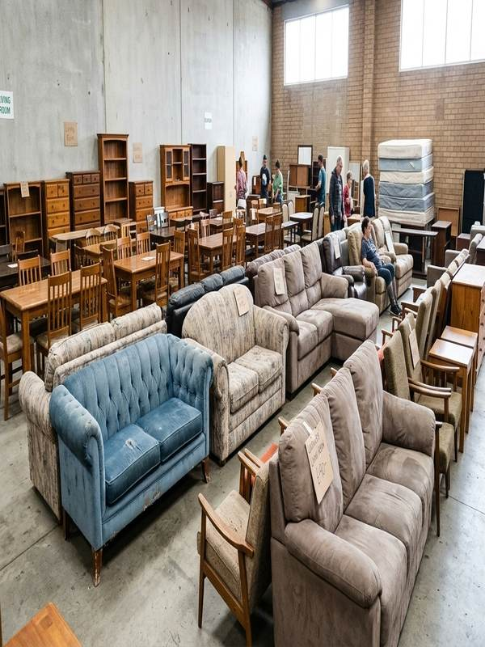
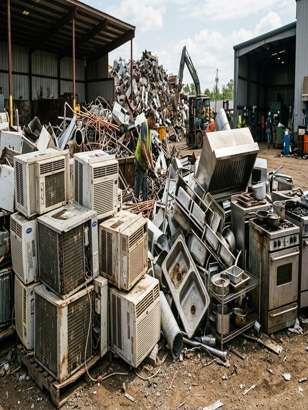
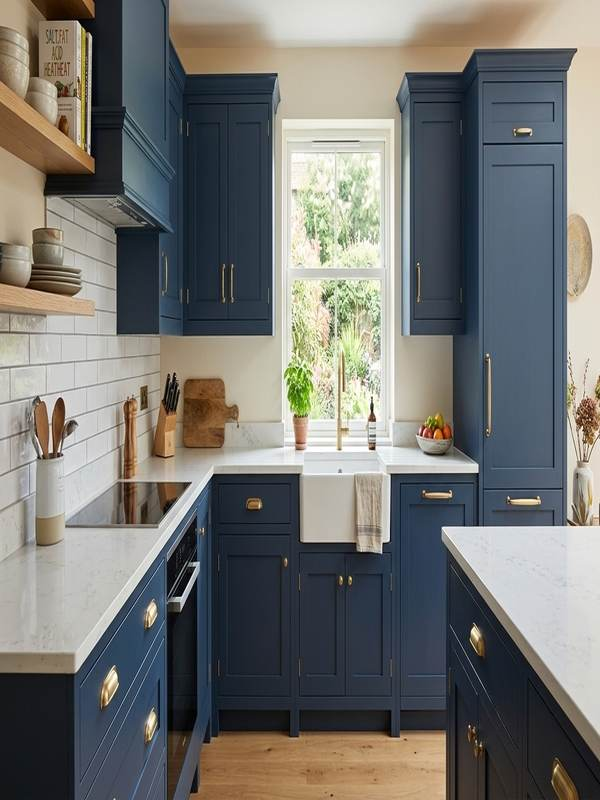
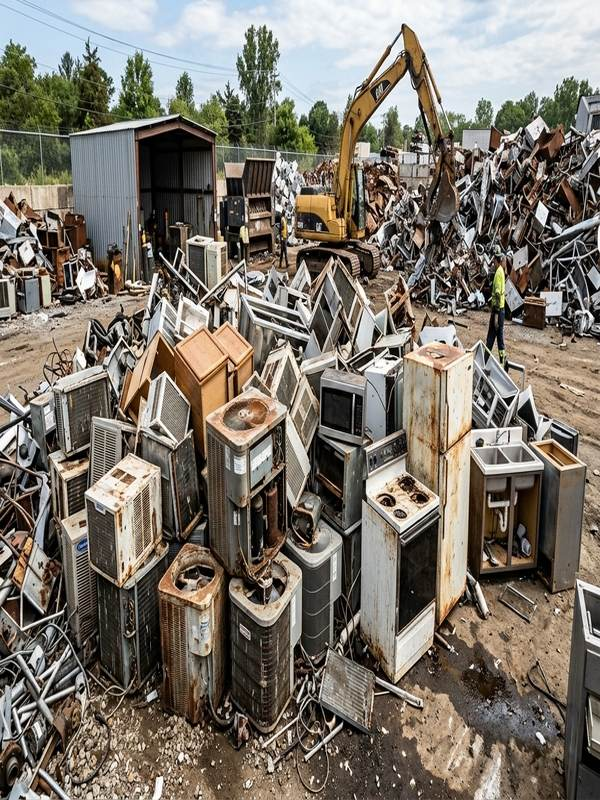
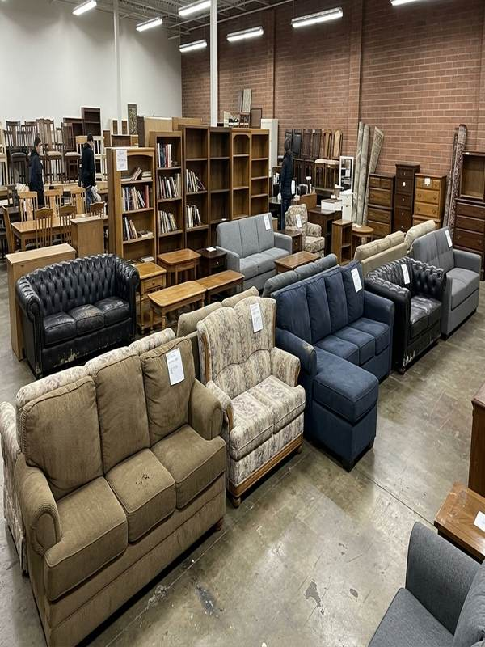

شراء اثاث مستعمل مكة بأفضل الأسعار
خدمة شراء اثاث مستعمل مكة بأسعار تنافسية تشمل جميع أنواع الأثاث المنزلي والمكتبي. تقييم عادل ودفع فوري ونقل مجاني...
اقرأ المزيد
خدمة شراء اثاث مستعمل مكة بأسعار تنافسية تشمل جميع أنواع الأثاث المنزلي والمكتبي. تقييم عادل ودفع فوري ونقل مجاني...
اقرأ المزيد
نشتري جميع أنواع المكيفات: سبليت، شباك، مركزي. فك ونقل سريع، دفع فوري، وأعلى الأسعار حسب حالة المكيف والماركة...
اقرأ المزيد
نشتري جميع أنواع المطابخ (ألمنيوم، خشب، جاهزة) والكنب والمجالس. تقييم دقيق، شراء سريع، ونقل مجاني دون عناء...
اقرأ المزيد
نشتري الحديد، النحاس، الألمنيوم، والكيابل الكهربائية المستعملة. أسعار محدثة يوميًا، ميزان دقيق، ودفع فوري...
اقرأ المزيد
نشتري العفش المستعمل من المنازل والشركات: غرف نوم، صالات، أجهزة كهربائية، وأثاث كامل. تقييم عادل ونقل مجاني...
اقرأ المزيدخدمة شراء اثاث مستعمل وسكراب مكة 24 ساعة طوال الأسبوع. نغطي جميع أحياء مكة المكرمة - استجابة فورية ووصول سريع...
اقرأ المزيد